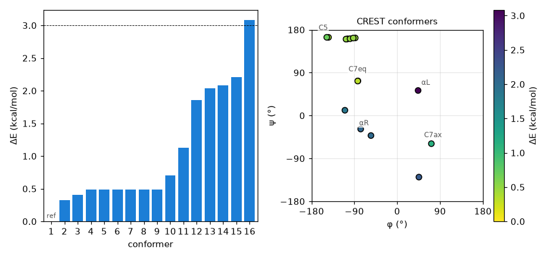
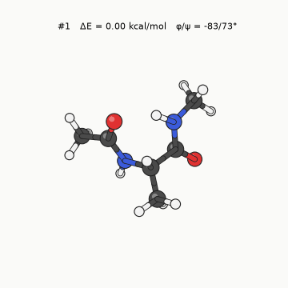

CREST가 하는 일
기본 작업인 iMTD-GC는 앞 장의 RMSD 메타다이내믹스를 바이어스 세기와 폭을 바꿔 가며 여러 번 돌리고, 궤적에서 뽑은 구조를 모두 최적화한다. 그다음 에너지와 구조로 중복을 걸러 내고, 새로 찾은 낮은 에너지 구조가 있으면 거기서 다시 탐색한다. 사람이 이면각을 하나씩 돌려 보는 것보다 훨씬 넓게 훑고, 고리나 수소결합 네트워크처럼 손으로 다루기 힘든 경우에도 동작한다.
실행
crest xtbopt.xyz --gfn2 --alpb water -T 8 > crest.out
출발 구조는 xtb로 한 번 최적화해 둔 것이 좋다. -T는 스레드 수다. CREST는 여러 개의 xtb 계산을 동시에
돌리므로 코어를 많이 줄수록 빨라진다. 이온이나 라디칼이면 --chrg, --uhf를 xtb와 똑같이 준다.
출력 파일
| 파일 | 내용 |
|---|---|
crest_conformers.xyz | 서로 다른 컨포머. 에너지 순으로 정렬돼 있고, 주석 줄이 에너지(Eh)다. |
crest_best.xyz | 가장 낮은 컨포머 하나 |
crest_rotamers.xyz | 메틸기 회전처럼 원자 번호만 바뀐 것까지 포함한 전체 목록 |
crest.energies | 컨포머별 상대 에너지 |
출력 끝에는 컨포머별 상대 에너지와 볼츠만 분포가 표로 나온다.
예제: 물 속의 알라닌 다이펩타이드
ALPB(water)로 최적화한 구조에서 CREST를 8코어로 돌렸다. 벽시계 시간 3분 45초, CPU 시간 27분 20초가 걸렸고, 그동안 에너지와 기울기를 127,609번 계산했다. 기본 에너지 창 6 kcal/mol 안에서 서로 다른 컨포머 16개가 남았는데, 가장 높은 것도 3.09 kcal/mol이라 창을 다 쓰지 않았다. 가장 낮은 컨포머의 에너지(−32.99136 Eh)는 출발 구조와 같다. 출발한 C7eq가 이미 이 수준에서의 최저 구조였다는 뜻이다.

왼쪽은 컨포머별 상대 에너지이고, 점선은 흔히 쓰는 3 kcal/mol 기준이다. 오른쪽은 같은 컨포머를 φ/ψ 지도에 찍고 에너지로 색을 칠했다.

아래 표의 분포는 CREST가 298.15 K에서 전자 에너지로 계산한 볼츠만 분포다.
| 순위 | ΔE (kcal/mol) | φ / ψ (°) | 영역 | 분포 (%) |
|---|---|---|---|---|
| 1 | 0.00 | −83 / 73 | C7eq | 40.1 |
| 2 | 0.32 | −83 / 72 | C7eq | 2.6 |
| 3 | 0.41 | −144 / 164 | C5 | 20.1 |
| 4 | 0.49 | −104 / 161 | β | 7.2 |
| 5 | 0.49 | −107 / 160 | β | 3.9 |
| 6 | 0.49 | −107 / 160 | β | 2.0 |
| 7 | 0.49 | −99 / 161 | β | 0.7 |
| 8 | 0.49 | −88 / 163 | β | 12.4 |
| 9 | 0.49 | −92 / 163 | β | 2.6 |
| 10 | 0.70 | −148 / 164 | C5 | 0.5 |
| 11 | 1.13 | 72 / −59 | C7ax | 4.8 |
| 12 | 1.86 | −110 / 11 | αR과 C7eq 사이 | 1.2 |
| 13 | 2.04 | −55 / −42 | αR | 0.9 |
| 14 | 2.08 | −77 / −28 | αR | 0.05 |
| 15 | 2.21 | 46 / −129 | φ > 0, C7ax 아래 | 0.9 |
| 16 | 3.09 | 44 / 53 | αL | 0.1 |
4–9위는 에너지가 0.004 kcal/mol 안에 모여 있고 φ/ψ도 거의 같다. 무거운 원자만 맞춰 보면 서로 RMSD가 0.17 Å 이하이고, 차이는 주로 수소 위치(메틸기 방향)에 있다. 3위와 10위도 마찬가지다(0.03 Å). 백본 구조로 보면 사실상 C7eq, C5, β 세 가지가 0.5 kcal/mol 안에 있는 셈이다. 분포에는 같은 구조의 회전 이성질체 수가 반영돼 있어서, 1위와 2위의 에너지 차이는 0.32 kcal/mol이지만 분포는 40%와 3%로 크게 다르다.
앞 장의 결과와 견줘 보면, 100 ps 보통 MD가 머문 C7eq, 펼친 영역(C5/β), αR은 모두 이 목록에 있고, 영역별 비중도 펼친 영역과 C7eq가 대부분이라는 점에서 비슷하다(CREST 분포: 펼친 영역 49%, C7eq 43%, αR 쪽 2%. MD: 61%, 27%, 12%). αR의 비중이 MD 쪽에서 더 큰 것은 CREST 분포가 전자 에너지만 쓰고 엔트로피를 빼기 때문일 수도 있고, 100 ps가 짧기 때문일 수도 있다. 반면 φ > 0인 C7ax(11위), 15위, αL(16위)은 보통 MD가 한 번도 가지 못한 곳이다. 메타다이내믹스는 이 영역을 훑었고, CREST는 그런 궤적에서 뽑은 구조를 최적화해 극소로 확정했다.
자주 쓰는 옵션
| 옵션 | 뜻 |
|---|---|
--ewin 6.0 | 남길 에너지 창 (kcal/mol). 기본 6 |
--quick, --squick, --mquick | 탐색을 줄여 빠르게. 큰 분자의 첫 시도용 |
--gfnff | GFN-FF로 탐색. 원자 수백 개 규모 |
--gfn2//gfnff | GFN-FF로 탐색하고 GFN2로 다시 최적화 |
--nci | 분자 복합체용. 조각이 흩어지지 않게 벽 퍼텐셜을 건다. |
--cregen file.xyz | 탐색 없이 주어진 앙상블의 중복만 걸러 정렬 |
결과를 어떻게 읽을까
- 빠진 컨포머: CREST는 확률적 탐색이라 매번 결과가 조금씩 다르다. 중요한 계라면 두 번 돌려 합친다.
- 에너지 순서: GFN2의 상대 에너지는 수 kcal/mol씩 틀릴 수 있다. 에너지 창을 넉넉히 잡아 후보를 모으고, 순위는 DFT로 다시 정한다. 다음 장에서 이 앙상블의 상위 8개를 r2SCAN-3c로 재최적화하면 1위가 C7eq에서 펼친 구조(PII/β)로 바뀌고, 4~8위는 한 구조로 합쳐진다.
- 자유에너지:
crest_conformers.xyz의 에너지는 전자 에너지다. 진동 엔트로피가 다른 컨포머끼리는 자유에너지 순서가 바뀔 수 있다.